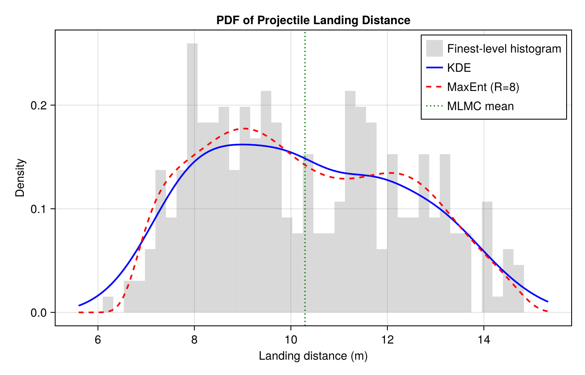
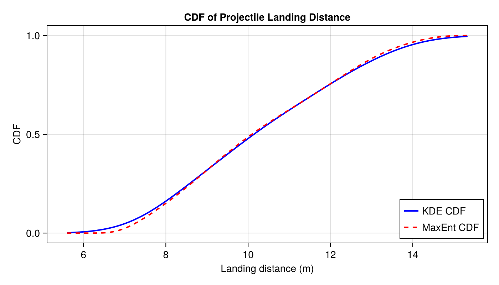

PDF & CDF Estimation
This example demonstrates how to estimate probability density functions (PDFs) and cumulative distribution functions (CDFs) from MLMC samples using kernel density estimation and the maximum entropy method.
We use the projectile motion model with uncertain parameters and estimate the distribution of the landing distance.
Setup: Projectile Model and MLMC Samples
using Parameters
using Distributions
using MultilevelMonteCarlo
using Statistics
using Random
Random.seed!(42)
@with_kw struct Drag{RhoType, CdType, AreaType}
ρ::RhoType = 1.225; C_d::CdType = 0.47; A::AreaType = 0.01
end
(d::Drag)(v) = 0.5 * d.ρ * d.C_d * d.A * v^2
@with_kw struct ProjectileParams{H,V,A,M,D}
h0::H; v0::V; angle::A; mass::M; drag::D
end
import Random: rand
function rand(p::ProjectileParams)
ProjectileParams(
h0 = p.h0 isa Real ? p.h0 : rand(p.h0),
v0 = p.v0 isa Real ? p.v0 : rand(p.v0),
angle = p.angle isa Real ? p.angle : rand(p.angle),
mass = p.mass isa Real ? p.mass : rand(p.mass),
drag = Drag(
ρ = p.drag.ρ isa Real ? p.drag.ρ : rand(p.drag.ρ),
C_d = p.drag.C_d isa Real ? p.drag.C_d : rand(p.drag.C_d),
A = p.drag.A isa Real ? p.drag.A : rand(p.drag.A)),
)
end
function projectile_distance(p::ProjectileParams; dt=0.01)
g = 9.81
θ = deg2rad(p.angle)
vx, vy = p.v0 * cos(θ), p.v0 * sin(θ)
x, y = 0.0, Float64(p.h0)
max_x = x
for _ in 0:dt:10.0
v = sqrt(vx^2 + vy^2)
fd = p.drag(v)
vx += (-fd * vx / v / p.mass) * dt
vy += (-g - fd * vy / v / p.mass) * dt
x += vx * dt; y += vy * dt
max_x = max(max_x, x)
y < 0 && break
end
return max_x
end
params_uncertain = ProjectileParams(
h0 = Uniform(1.5, 1.7),
v0 = Uniform(8, 12),
angle = Uniform(30, 60),
mass = Uniform(0.1, 0.5),
drag = Drag(ρ=Uniform(1.0, 1.5), C_d=Uniform(0.3, 0.6), A=Uniform(0.005, 0.015)),
)
# Model levels at different time-step resolutions
timestepsizes = [0.25, 0.125, 0.0625, 0.03125]
levels = Function[
let dt = dt; p -> projectile_distance(p; dt=dt); end
for dt in timestepsizes
]
qoi_functions = Function[identity]
# Collect MLMC samples
samples = mlmc_sample(levels, qoi_functions, [4000, 2000, 1000, 300],
() -> rand(params_uncertain))
println("Collected samples: ", [size(samples.fine[l], 2) for l in 1:samples.n_levels],
" across ", samples.n_levels, " levels")Collected samples: [4000, 2000, 1000, 300] across 4 levelsKernel Density Estimation (KDE)
PDF via KDE
The MLMC kernel density estimator uses the multilevel telescoping sum with a Gaussian kernel:
\[\hat{f}(u) = \frac{1}{N_1} \sum_{i=1}^{N_1} K_h(u - Q_1^{(i)}) + \sum_{l=2}^{L} \frac{1}{N_l} \sum_{i=1}^{N_l} \bigl[K_h(u - Q_l^{(i)}) - K_h(u - Q_{l-1}^{(i)})\bigr]\]
pdf_kde = estimate_pdf_mlmc_kernel_density(samples, 1)
# Evaluate at some representative distances
for d in [2.0, 4.0, 6.0, 8.0]
println(" PDF at d=$d m: ", round(pdf_kde(d), digits=4))
end PDF at d=2.0 m: 0.0
PDF at d=4.0 m: -0.0
PDF at d=6.0 m: 0.0162
PDF at d=8.0 m: 0.1455CDF via KDE
The CDF estimator uses the Gaussian CDF kernel $\Phi((u-x)/h)$ in the same telescoping-sum structure:
cdf_kde = estimate_cdf_mlmc_kernel_density(samples, 1)
println("CDF at 3m: ", round(cdf_kde(3.0), digits=4))
println("CDF at 5m: ", round(cdf_kde(5.0), digits=4))
println("CDF at 7m: ", round(cdf_kde(7.0), digits=4))CDF at 3m: 0.0
CDF at 5m: 0.0002
CDF at 7m: 0.0477Maximum Entropy Method
The maximum entropy estimator fits a PDF of the form:
\[\tilde{f}_U(u) = \exp\!\left(\sum_{k=0}^{R} \lambda_k \phi_k\!\left(\frac{2(u-a)}{b-a} - 1\right)\right)\]
where $\phi_k$ are orthonormal Legendre polynomials on $[-1,1]$. The coefficients $\lambda_k$ are found by matching generalized moments estimated from the MLMC samples, using Newton's method with a ForwardDiff Jacobian.
MaxEnt PDF
pdf_maxent, λ, a, b = estimate_pdf_maxent(samples, 1; R=8)
println("Support: [", round(a, digits=2), ", ", round(b, digits=2), "]")
println("λ coefficients: ", round.(λ, digits=4))Support: [4.08, 16.33]
λ coefficients: [-21.5936, 27.0111, -35.9792, 25.6084, -24.1928, 12.4398, -9.1487, 2.8956, -1.6769]Verify the PDF integrates to 1:
using QuadGK
integral, _ = quadgk(pdf_maxent, a, b; rtol=1e-6)
println("∫ PDF dx = ", round(integral, digits=6))∫ PDF dx = 1.0Comparison: KDE vs MaxEnt
using CairoMakie
# Evaluation grid
est = mlmc_estimate_from_samples(samples)
finest = samples.fine[end][1, :]
u_range = range(minimum(finest) - 0.5, maximum(finest) + 0.5, length=200)
fig = Figure(size=(700, 450))
ax = Axis(fig[1, 1]; xlabel="Landing distance (m)", ylabel="Density",
title="PDF of Projectile Landing Distance")
hist!(ax, finest; bins=40, normalization=:pdf, color=(:gray, 0.3),
label="Finest-level histogram")
lines!(ax, u_range, pdf_kde.(u_range); label="KDE", color=:blue, linewidth=2)
lines!(ax, u_range, pdf_maxent.(u_range); label="MaxEnt (R=8)", color=:red,
linewidth=2, linestyle=:dash)
vlines!(ax, [est[1]]; label="MLMC mean", color=:green, linewidth=1.5, linestyle=:dot)
axislegend(ax; position=:rt)
fig
CDF Comparison
cdf_maxent, _, _, _ = estimate_cdf_maxent(samples, 1; R=8)
fig2 = Figure(size=(700, 400))
ax2 = Axis(fig2[1, 1]; xlabel="Landing distance (m)", ylabel="CDF",
title="CDF of Projectile Landing Distance")
lines!(ax2, u_range, cdf_kde.(u_range); label="KDE CDF", color=:blue, linewidth=2)
lines!(ax2, u_range, cdf_maxent.(u_range); label="MaxEnt CDF", color=:red,
linewidth=2, linestyle=:dash)
axislegend(ax2; position=:rb)
fig2